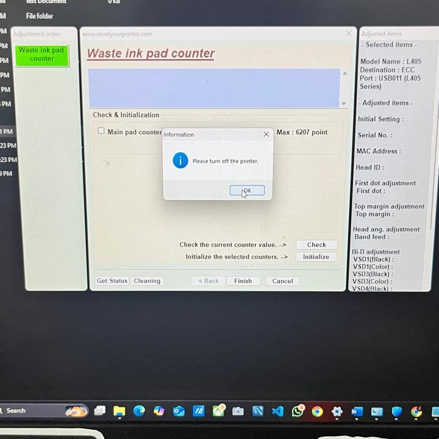
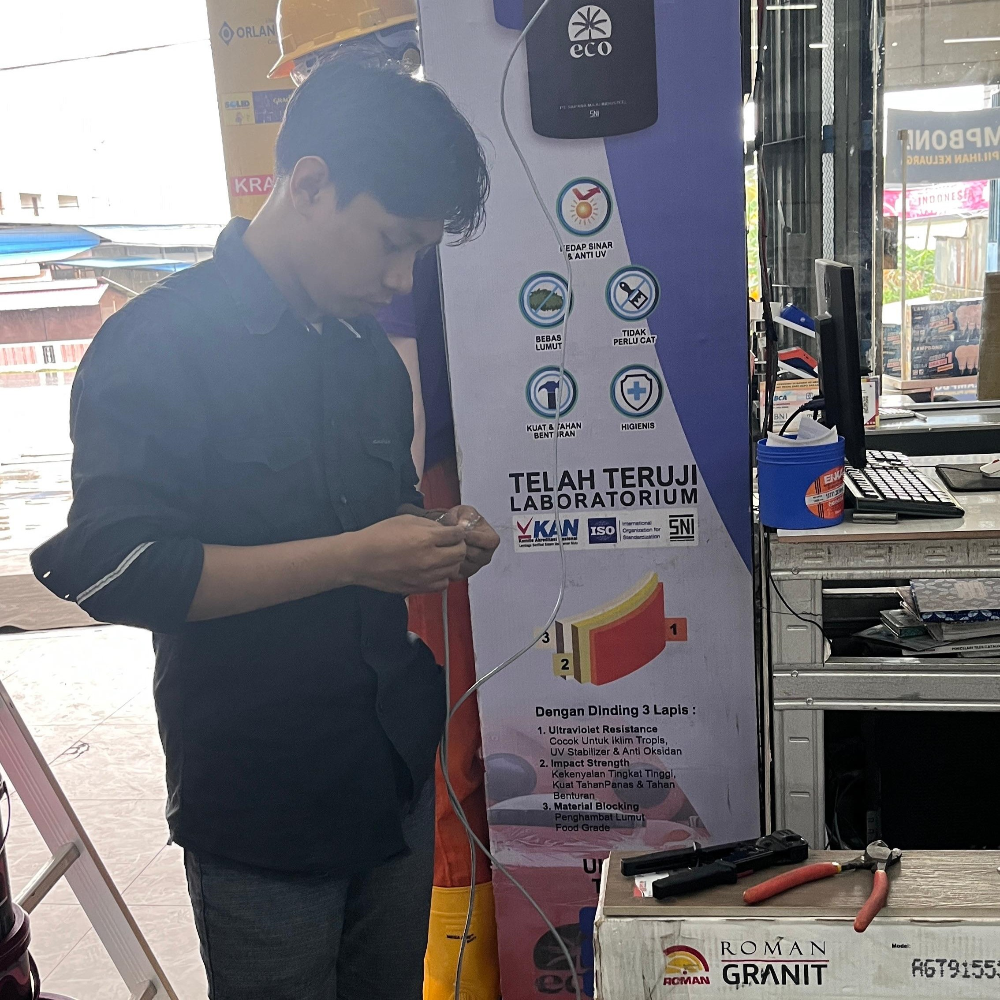
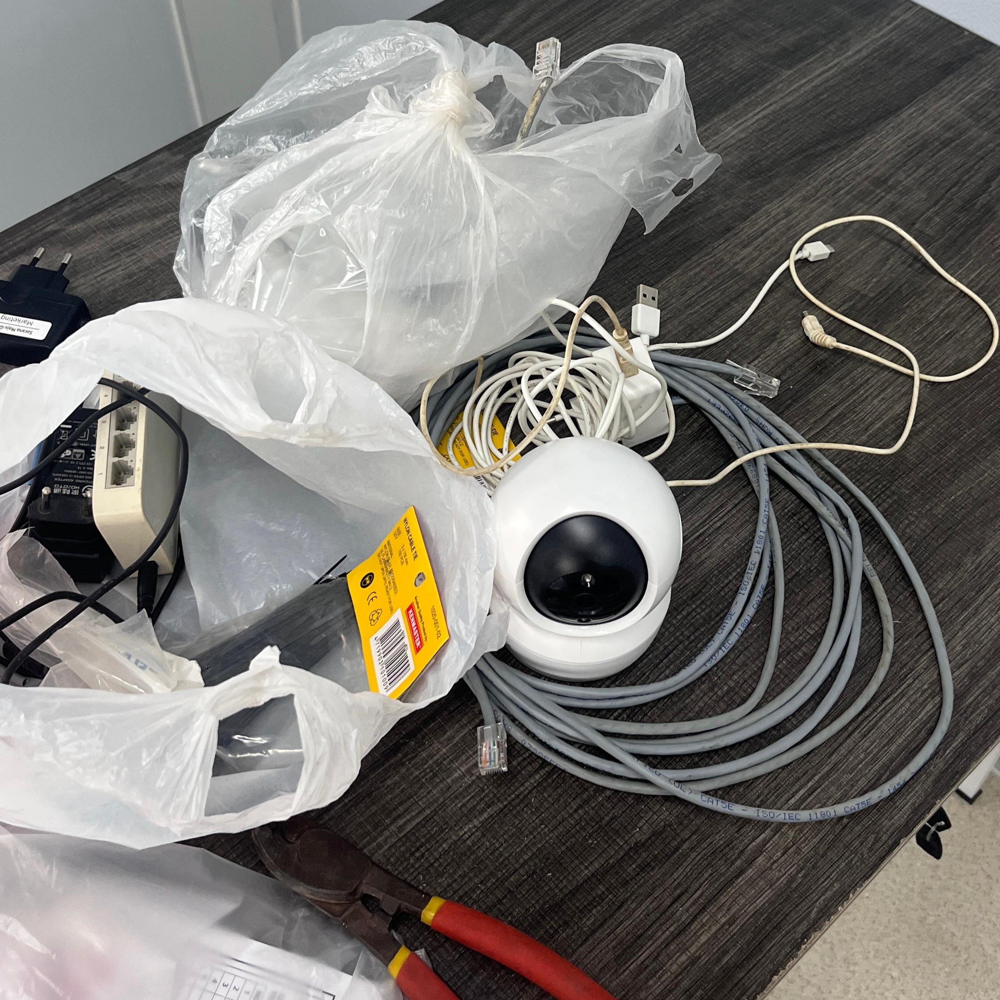
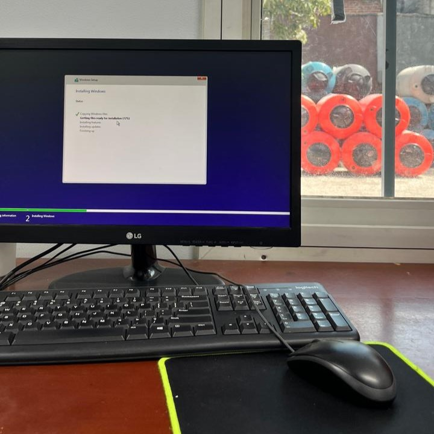
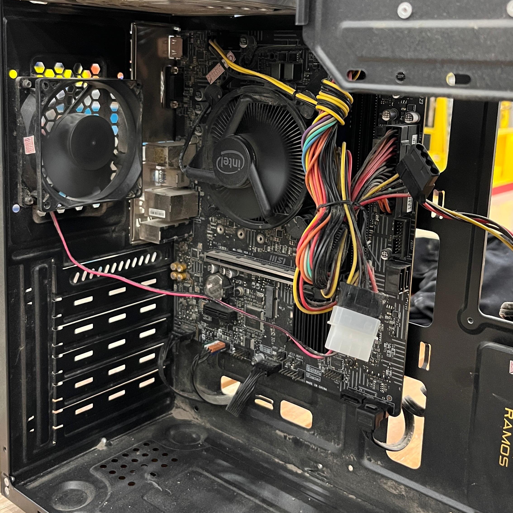

Halo, saya
Lulusan S1 Teknik Informatika yang berpengalaman menangani troubleshooting komputer dan jaringan, konfigurasi LAN, serta dukungan teknis untuk pengguna.

Reset waste ink pad counter pada printer Epson L405 menggunakan adjustment program agar printer dapat berfungsi kembali.

Pemasangan konektor RJ45 pada kabel LAN dengan tang crimping untuk memulihkan konektivitas jaringan.

Persiapan pemasangan CCTV, mencakup kamera, kabel LAN UTP, dan perangkat pendukung untuk penataan di area kantor.

Instalasi ulang sistem operasi Windows pada komputer kantor, termasuk pengaturan awal agar siap digunakan.

Pengecekan dan perawatan perangkat keras PC, mulai dari merapikan kabel, memeriksa komponen, hingga upgrade untuk menunjang kinerja.
PT Sarana Maju Indosteel
Klinik Sarlina SAF Kendari
Universitas Muslim Indonesia
2020 – 2025